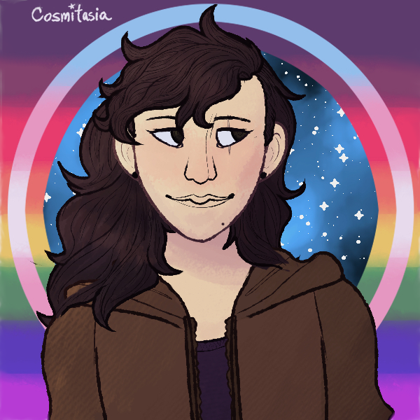

About

Hi! I go by Natalie and use she/her pronouns.
I advocate for equality and freedom for all marginalised people of the world.
Open-source software is also core to my beliefs of privacy and freedom.
My main programming projects use C, C++, x86 AT&T Assembly, Python and Java, amongst other languages which I have personal experience in.
Alongside systems and applications programming, I spend an amount of my time on Linux system administration and minor web development.
See Projects or feel free to browse my GitHub to see some of my work.
I have personal experience in low-level x86 programming and an interest in providing high-level backend and frontend programming to socialist NGOs in the future.